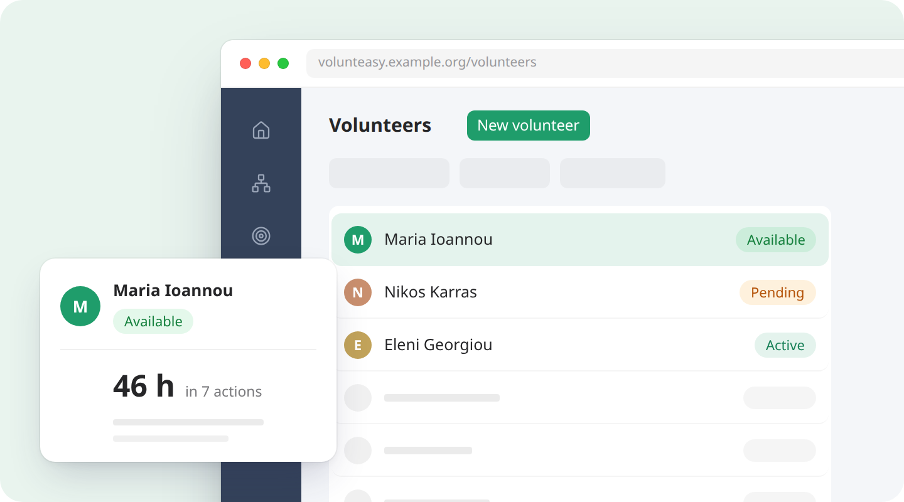
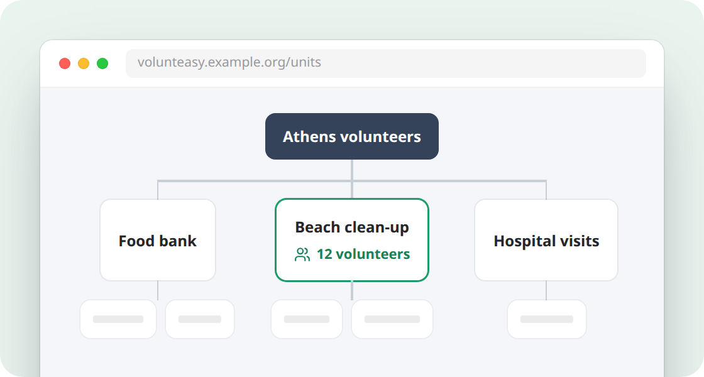
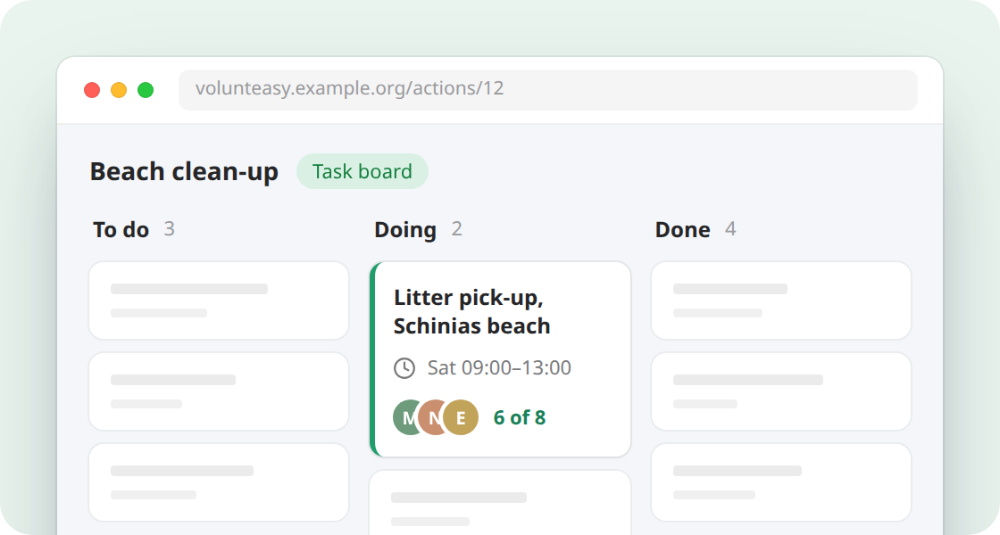
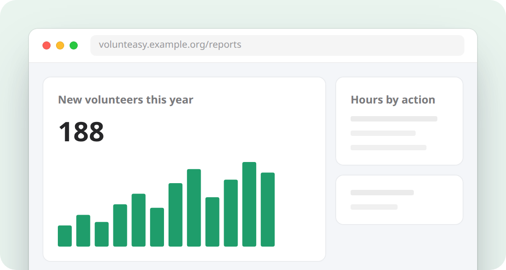

Free and open source · Apache 2.0
Volunteer management that your team will actually use
VoluntEasy keeps your volunteers, your teams and your actions in one place. Register volunteers, follow them through onboarding, plan shifts, and see how many hours they gave.
- Laravel 13 · PHP 8.3+
- MySQL or MariaDB
- English and Greek

Made for non-profits, municipalities, NGOs and community groups that coordinate many volunteers across teams and activities.
Everything a volunteer programme needs
From the first sign-up to the thank-you e-mail after an action.
Know every volunteer
A complete profile for each volunteer: contact details, skills, languages, interests, availability, files and history. Search by any field and see at a glance who is pending, available or active in each unit.
- Public sign-up form and API for your website
- Status per unit, with "not available" periods
- Timeline of every unit, action and status change

Organise in units
Model your organisation as a tree of units and sub-units. Each unit has its own coordinators and its own onboarding steps, for example a first contact, an interview and a training. Volunteers become available when they complete the steps.
- Coordinators see and edit only their units
- Roles: administrator, unit manager, action manager

Plan actions and shifts
Every action gets a task board. Split the work into tasks and subtasks, add shifts with the number of volunteers you need, keep checklists, and assign people. Publish a call-to-action page so new volunteers can choose a shift.
- Drag subtasks from To do to Done
- Shifts with dates, hours and volunteer counts
- Public pages for volunteers to sign up

Measure the impact
After an action, VoluntEasy sends a short questionnaire to the volunteers and to the coordinator. Reports show new volunteers per month, age groups, cities, education, and the hours given per action.
- Ratings of actions and of volunteers
- Charts and tables you can print or export to CSV
- In-app notifications for the coordinators
How it works
Volunteers sign up
On your website, with the public form, or entered by your team.
Units welcome them
Coordinators take each new volunteer through the unit's onboarding steps.
Actions get staffed
Available volunteers are assigned to tasks and shifts, or choose them on the call-to-action page.
Everyone gets feedback
Ratings and reports show what worked and who helped, so you can thank them.
Open, private and yours
Free forever
Apache 2.0 license. Use it, change it, and run it for as many volunteers as you have.
Your data stays with you
Host it on your own server. No tracking, no third-party scripts, no external services required.
Modern and maintained
Laravel 13 on PHP 8.3+, no jQuery, static analysis with Larastan and automated tests on every change.
Adapt it to your organisation
Deployment "flavours" let you change the volunteer form, the ratings and the reports without forking the core.
Get started in minutes
You need PHP 8.3 or newer, Composer and MySQL or MariaDB. The full guide is in the README.
git clone https://github.com/scify/VoluntEasy.git
cd VoluntEasy/VoluntEasy
composer install
cp .env.example .env
php artisan key:generate
php artisan migrate --seed
php artisan serveHelp us make volunteering easier
VoluntEasy is built in the open. Report a bug, suggest a feature, translate it to your language, or send a pull request.